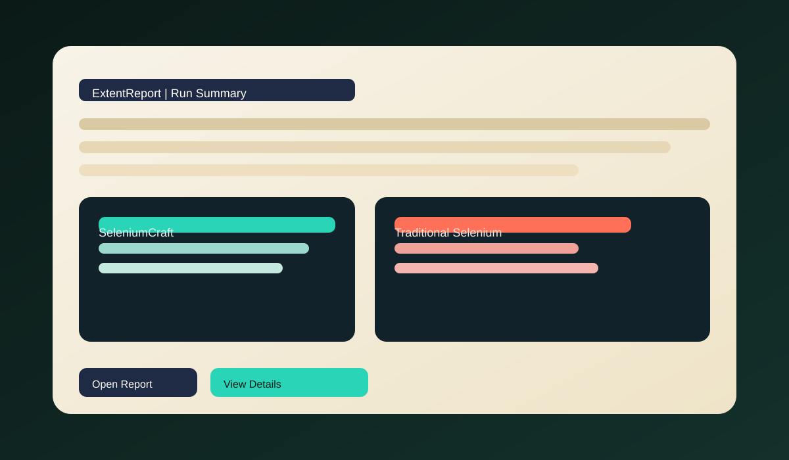
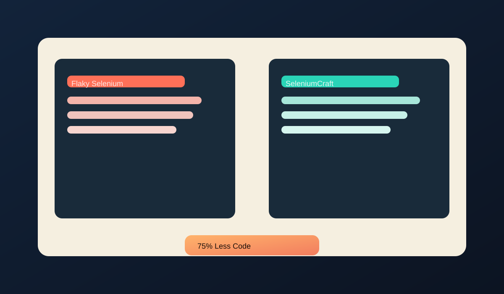

This project showcases a direct, 1:1 comparison between traditional Selenium tests and SeleniumCraft's resilient API. See the failures, then see the fixes — with industry-grade reporting and real execution logs.
The library site explains the capabilities. This demo proves them on real UI workflows using the same pages, same assertions, and side-by-side execution against traditional Selenium.
This project mirrors the same use-cases in both styles: stale elements, dynamic loading, retries, and frame context. What users feel instantly is lower noise in tests and faster, more trustworthy feedback.
Same scenarios. Same pages. Two radically different outcomes.
It removes the top causes of flaky automation without changing your stack.
Use the SeleniumCraft library reference for API details, then use this demo as a migration blueprint.

Every run generates a polished report with steps, screenshots, and failure traces.
Open Report
Watch the flaky suite fail while the SeleniumCraft suite stays green with fewer lines of code.
Live demo data from this repo